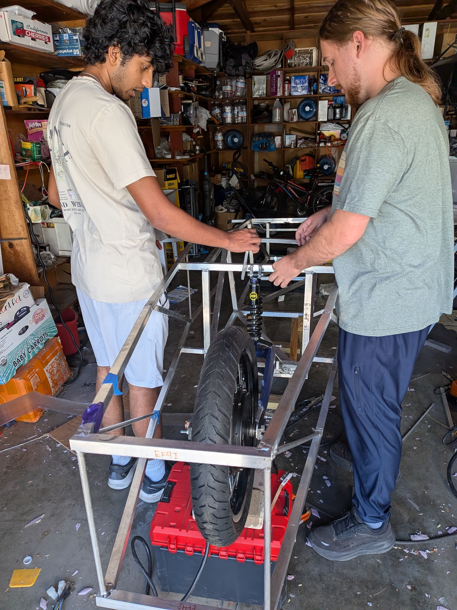
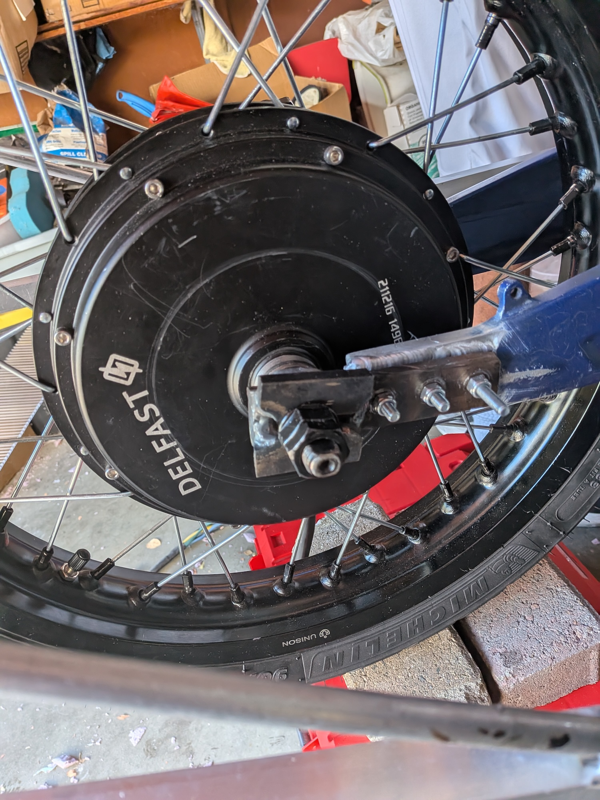

Rear Wheel Setup
07/01/2026


Today we finished setting up the back wheel area. We got our hub motor resized by Evolution Motorcycles, then cut out attachment pieces for the swingarm and rear suspension. Additionally, we made custom steel parts to connect our rear wheel to the swingarm and made our custom brake mounts using steel pieces. This ensures we have a stronger back wheel mount that would be less prone to snapping apart compared to what happened last year during testing, where the motor mount broke with a weaker setup.